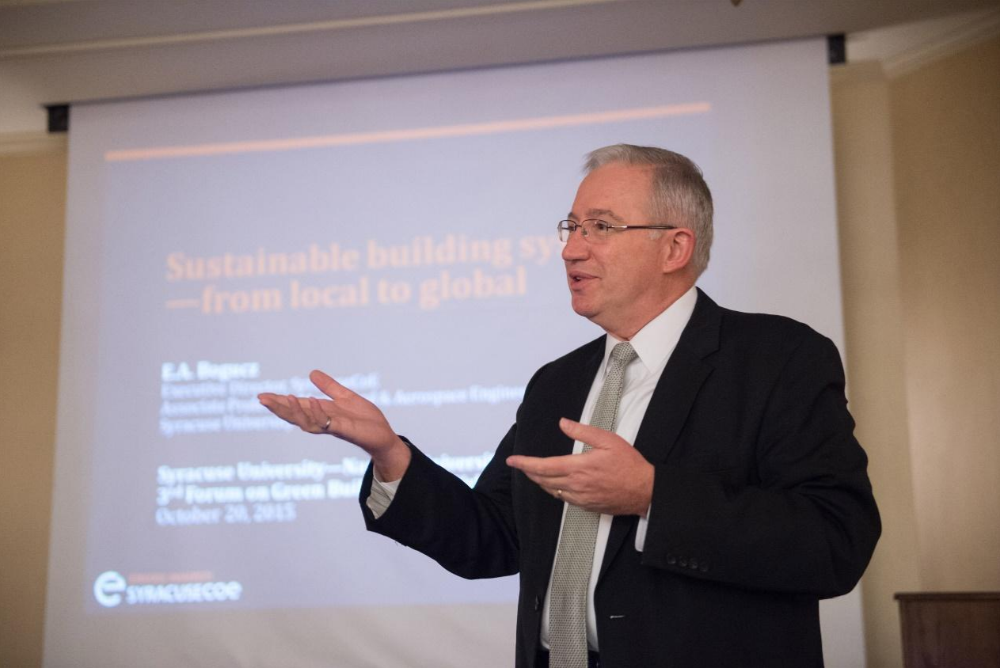
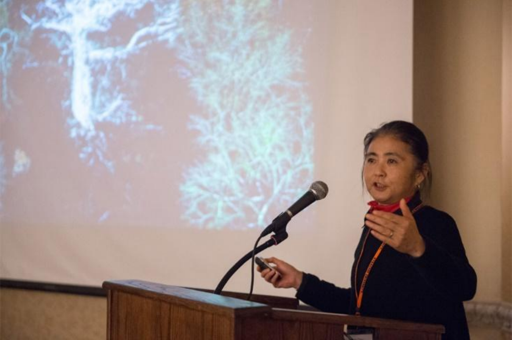

纽约州能源与环境卓越中心（New York State Center of Excellence on
Energy and Environment）主任 Edward Bogucz 教授和南京大学建筑与城市规划
学院丁沃沃教授分别作了题为：Sustainable building systems--from local to
global 和 Methodological thinking on ecological urban design 的主旨报告。
两个报告分别从建筑环境系统和生态城市规划两个角度分析了绿色设计理念的
重要性，并就如何开展跨学科研究进行了深入探讨。

Edward Bogucz 教授作主旨报告

丁沃沃教授作主旨报告
雪城大学副校长 Shere Abbot 教授作了题为：Thoughts on building a “Slik”
road from Paris talks 的演讲。从国际政策的高度分析了开展能源与环境领域
合作以及可持续发展的重要性，并介绍了目前美中两国在节能减排领域的合作情
况。